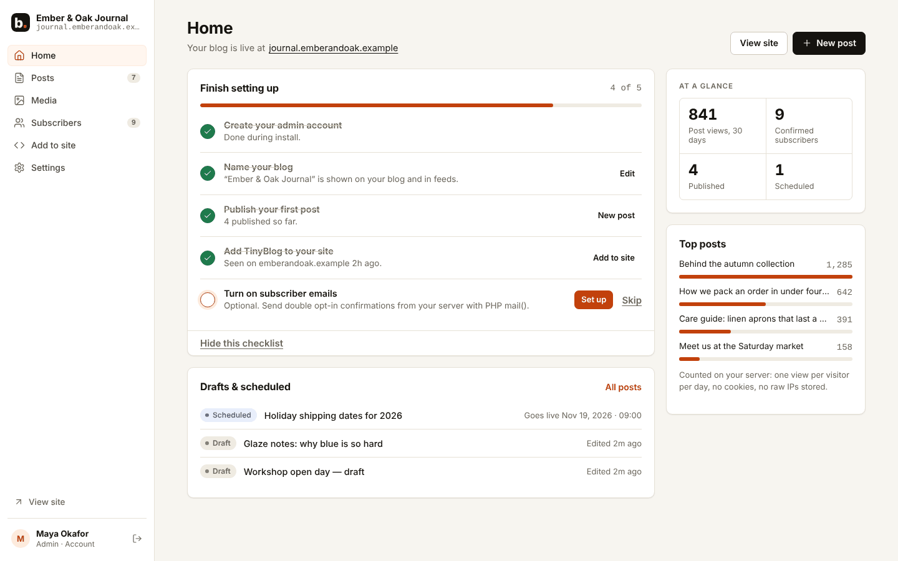
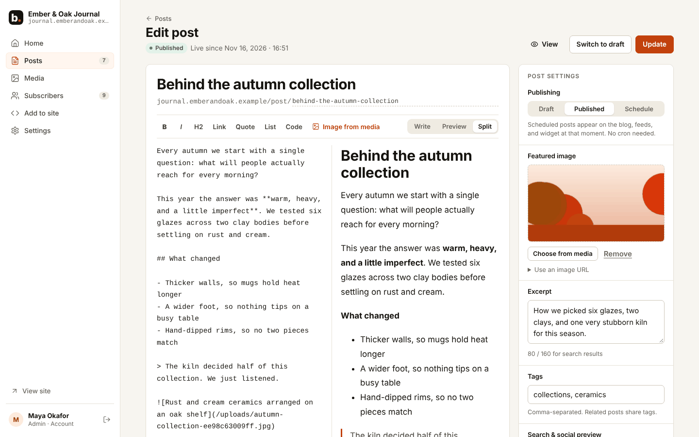
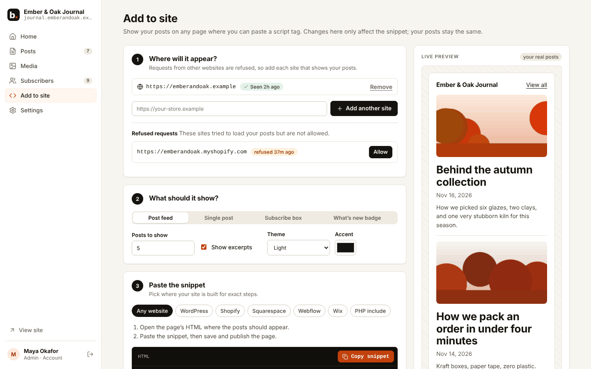
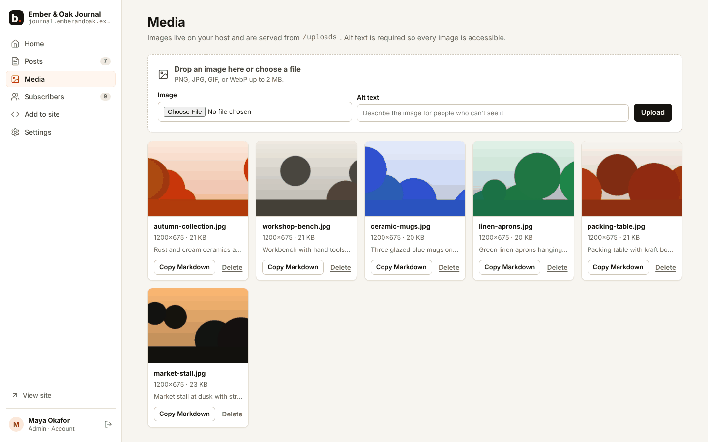

Online stores
Publish buying guides, launches, and stories beside your products, without a monthly blog-app subscription.
v0.2PHP + SQLite · MIT · No trackers
TinyBlog is a single PHP file with a SQLite database and a one-line JavaScript embed. Render a feed, a single post, or a subscribe box on any site — publishing and data stay on your host, not a vendor cloud.
<script
src="https://blog.example.com/tinyblog-widget.js"
data-tb-config='{"site":"store-1",
"endpoint":"https://blog.example.com/api",
"widgetType":"feed","maxItems":5}'>
</script>
// That's the whole client-side integration.
// Posts render from JSON your PHP host serves —
// prepared SQL, CORS allowlist, no third parties.Who it's for
For a store, portfolio, docs site, or product-updates feed, a full CMS or a hosted platform is often too much. TinyBlog adds the blog without rebuilding the site.
Publish buying guides, launches, and stories beside your products, without a monthly blog-app subscription.
Run a changelog or product-updates feed on your marketing site or docs, with RSS and JSON Feed built in.
Drop one small backend onto a client's existing hosting and hand them a browser admin. No plugin treadmill.
Add a notes or updates section to a static site. No build step, no framework, no new host.
How it works
No CMS fleet, no vendor cloud. One PHP app writes to SQLite, renders canonical pages and RSS, and serves the JSON the embed reads.
One <script> tag renders feed, post, or subscribe. Zero dependencies, no build step.
tinyblog.php + SQLite: admin, posts, uploads, subscribers, settings. Data never leaves your account.
Canonical post pages, tag & search, RSS and sitemap, plus a CORS-allowlisted JSON API for the widget.
Setup
Upload one folder, enable PHP 8, and the app creates its own database. Then write and embed.
Drop the files on any PHP 8 host with PDO SQLite. The app creates data/tinyblog.db on first run — no migrations to run by hand.
Set admin email/password from cPanel File Manager, then log in at /admin to write posts, upload media, and manage settings.
Paste the script on an allowed site. It fetches only the JSON the widget needs and renders it inline. Admin → Add to site builds the snippet for you.
Set admin credentials before public launch, prefer password hashes, remove recovery credentials after use, and force HTTPS.
# clone the repo (backend + widget + docs)
git clone https://github.com/tanzir71/tinyblog
# upload to a PHP 8 host, make data/ and uploads/ writable,
# then open /admin to create the first admin account
chmod 755 data uploads<script
src="https://blog.example.com/tinyblog-widget.js"
data-tb-config='{"site":"store-1","endpoint":"https://blog.example.com/api","widgetType":"feed"}'></script># private, server-side only; never commit this file
TB_ADMIN_EMAIL=owner@example.com
TB_ADMIN_NAME=Owner
TB_ADMIN_PASSWORD_HASH=$2y$10$...The embed
Feed, single post, or subscribe box from one script tag, plus a small “What’s new” badge for headers and navbars. Light, dark, card, or inherit themes with CSS-variable overrides, and everything it renders is sanitized first.
Recent posts with optional excerpts and reading time. Paginated responses keep long archives light.
Render one post by slug: release notes inside your app, or a story on a product page.
A site-scoped signup box with rate limiting, double opt-in confirmation, and one-click unsubscribe.
Features
Feature-rich where it counts for readers and SEO, deliberately narrow everywhere else.
Server-sanitized Markdown with tags, slugs, and auto excerpts. Raw HTML is escaped, never executed.
save_post()Static-style post pages with Open Graph and social meta, plus tag listings and prepared-statement search.
/post/{slug}Standards-compliant feed.xml and sitemap.xml generated straight from your posts.
Feed, single post, subscribe box, or a “What’s new” badge from one script tag, themeable with CSS-variable overrides.
widgetTypeSite-scoped subscribe endpoint with rate limiting, double opt-in confirmation, and one-click unsubscribe.
/api/subscribeImage-only uploads with an execution-denied uploads directory. No object storage required.
uploads/PDO prepared statements, CSRF tokens, session timeout, password hashing, and a CORS origin allowlist.
check_cors_or_fail()No analytics scripts, no external fonts on your blog, no phone-home. Your data stays in your hosting account.
0 trackersAdmin
The daily publishing surface is quiet, keyboard-friendly, and built around the jobs you do most often: set up, write, publish, put it on your site.




Security
The threats that matter for a small PHP blog each have a specific, inspectable answer — no plugin marketplace to audit.
PDO prepared statements for every query, including search and its FTS5 fallback.
prepared statementsOutput escaping, server-sanitized Markdown, and a second sanitization pass inside the widget.
htmlEscape()CSRF tokens on every admin write; a POST without a valid token gets a 403.
require_csrf()Image-only uploads, and script execution denied inside uploads/.
uploads/.htaccessPassword hashing, session timeout, and rate-limited logins. No default admin password ships.
rate_limit()A per-site CORS origin allowlist, plus an optional public siteKey for API reads.
check_cors_or_fail()Compare
For a store, portfolio, docs site, or product-updates feed, a full CMS or a hosted platform is often too much — and lock-in and per-seat pricing punish you later.
DropInBlog lists its Solo plan at $99/mo, or $79/mo billed yearly, for managed convenience. TinyBlog does the same blog-embed job as open-source files on your host.
Prices from DropInBlog's site and Shopify listing, November 2026. Plans change; verify before quoting.
No platform lock-in, no revenue cut, and the archive lives on your domain instead of someone else's subdomain.
Compare TinyBlog vs SubstackRuns on the cheapest PHP shared hosting — no Node process, no reverse proxy, no monthly Ghost(Pro) bill.
Compare TinyBlog vs GhostA readable single file instead of a plugin-and-update treadmill and a database you can't fit in your head.
Compare TinyBlog vs WordPressUnlike third-party embed widgets, TinyBlog serves its own JSON from your host — no cross-site cookies or tracking.
Compare TinyBlog vs third-party widgetsScope
Honest scope beats an inflated feature list. When you outgrow these limits, the docs' "How to scale" section points the way.
No multi-tenant admin, no page builder, no theme marketplace, no plugin API. One app, one blog, one readable file.
No Node runtime, no build step, no Composer dependencies, no background job queue. SQLite until you genuinely outgrow it.
Move to Postgres when multiple authors, higher write volume, or large subscriber lists make SQLite locking noticeable, and move media to object storage when uploads outgrow your disk.
FAQ
Short answers here. The docs have the long ones, including deployment, routes, and backups.
Any PHP 8 host with PDO SQLite, including typical cPanel shared hosting. The PHP app does not run on Vercel; Vercel only hosts the marketing site and demo feed.
Anywhere you can paste a script tag: a custom HTML block, a theme section, or a code block. Admin → Add to site generates the snippet with step-by-step instructions per platform. Some site builders only run scripts on certain plans.
The widget is for display. Every post also gets a canonical page on your blog host with Open Graph tags, BlogPosting JSON-LD, RSS, and a sitemap. For pages that must ship posts in the HTML itself, include the server-rendered /embed/feed.html fragment.
You do. Posts, settings, media, and subscribers live in SQLite and uploads/ on your host, and Settings exports everything as JSON for backups or moving hosts.
No. Subscribers get double opt-in confirmation (optionally through PHP mail()) and one-click unsubscribe, and you can export confirmed subscribers as CSV. Sending newsletters is deliberately out of scope.
Yes. MIT licensed, with no paid tier and no per-seat pricing. You pay only for the hosting you already have.
Quick start
Grab the file, add the tag. The library is a single static file: download it into your project, then drop in the embed.
# clone the repo (backend + widget + docs)
git clone https://github.com/tanzir71/tinyblog
# or grab just the widget for the client side
curl -LO https://blog.example.com/tinyblog-widget.js